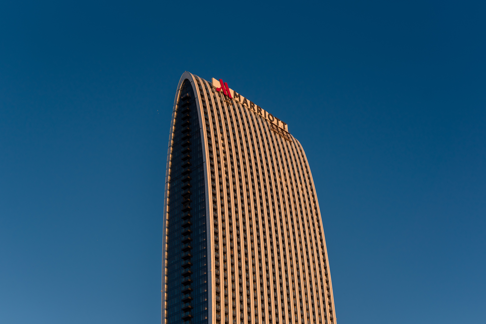
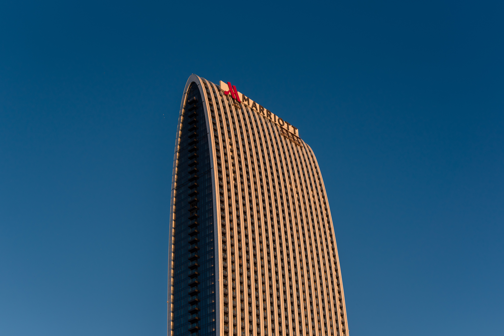

About me
I am 29 years old. For 7 years I worked as a design engineer in various Russian companies. Now I am a student again and studying the specialty FrontEnd developer. I am sociable. I love nature and animals.
My education
The Federal State Budget Educational Institution of Higher Education «Belgorod State Technological University named after V.G. Shukhov» Institute of Technological Equipment and Mechanical Engineering, Computer technologies in equipment design
Orel State University named after I.S. Turgenev Marketing and Management, Logistics and Supply Chain Management
My skills
Hard skills: 3d modeling in NX, Kompas3D programs, development of drawings. Creation and processing of portrait pictures of people, animals and nature pictures.
Soft skills: Sociability, the ability to listen to the interlocutor, flexibility and adaptability to new conditions, the ability to create a cozy and calm atmosphere in a group of people.
My hobbies
- Sit at home and do nothing
- Eat delicious food!
- Feed street cats
- Create a photo session
Photos by me:


 
